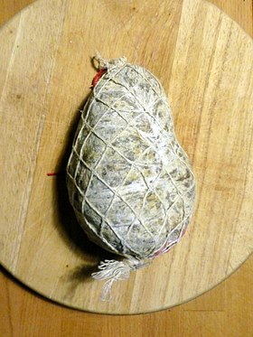

Le Jésus est un type de saucisson sec, à base de viande et de gras de porc, originaire de la région lyonnaise et en forme caractéristique de poire. C'est un aliment célèbre de la cuisine lyonnaise, classé par la DGCCRF comme « Charcuterie sèche de qualité supérieure »
